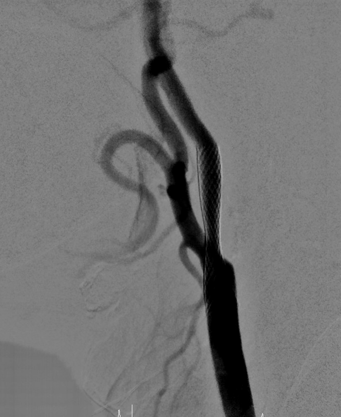
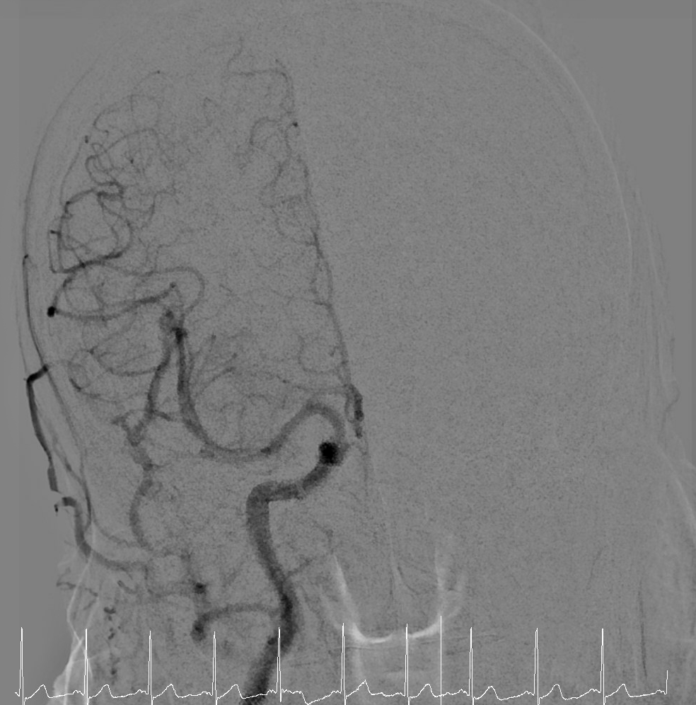
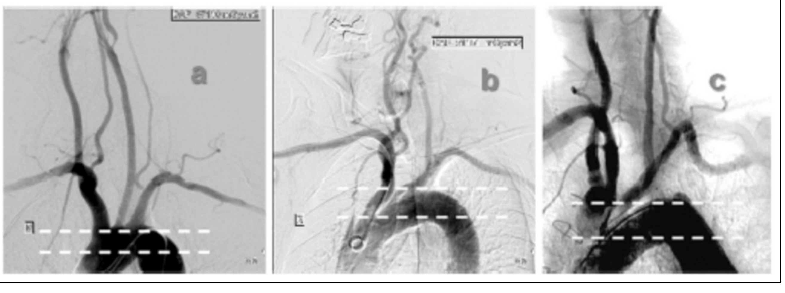
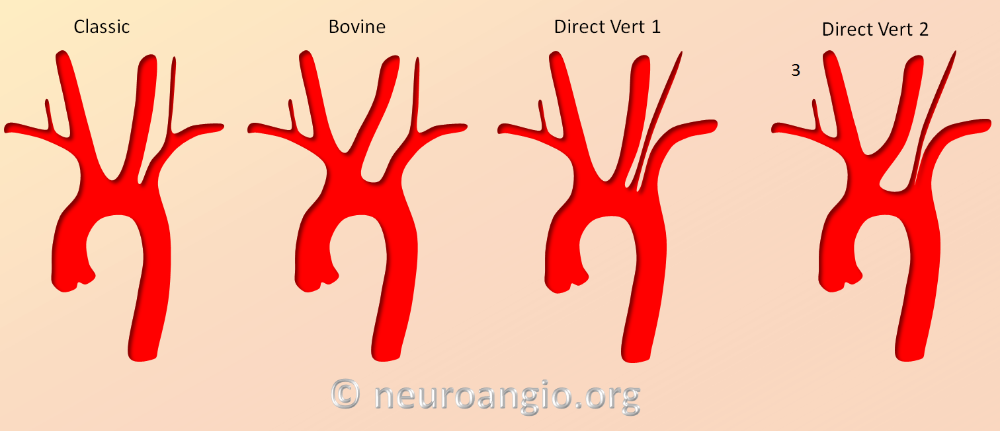
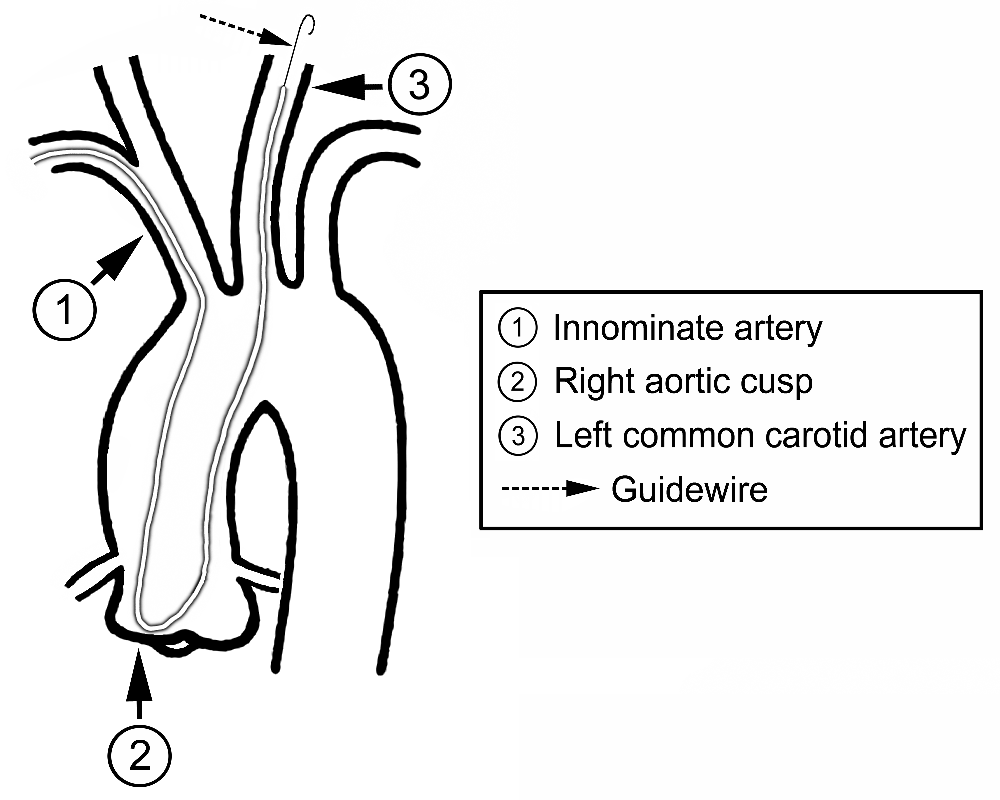
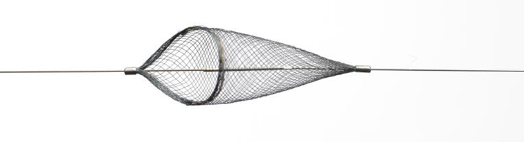
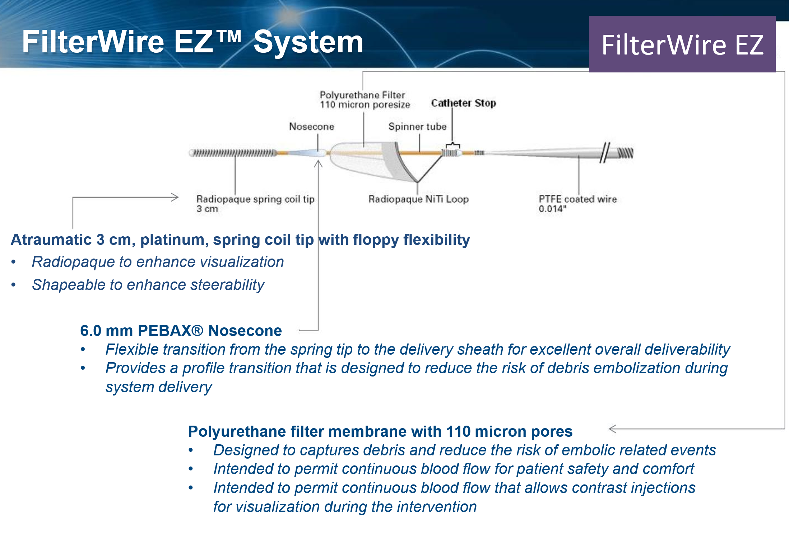
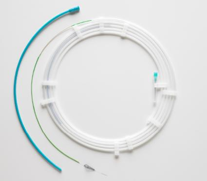

TSVS 頸動脈支架臨床訓練課程 · 2026-11-14
Step-by-Step:
Stenting Troubleshooting
and Medication
Stenting Troubleshooting
and Medication
頸動脈支架：從一個順利的案例走一遍，再談常見錯誤、difficult arch、嚴重鈣化、filter 與支架選擇
謝慕揚Mu-Yang Hsieh, MD, PhD, FESC
新竹臺大分院 心臟血管科 ｜ 集思台中烏日會議中心
影片均為講者病例（另註明者除外）；本課程僅供醫療專業人員教學使用
ROADMAP
今天的路線圖
案例 → 四個高風險步驟 → 弓與鈣化 → filter 與支架 → 用藥
基礎 → 進階
1案例
- TFA 到 stent 走一遍
- 每步該看什麼
約 7 分
2常見錯誤
- 四個高栓塞風險步驟
約 7 分
3弓與鈣化
- JR4 + 3 wires
- 何時換路、何時不做
約 7 分
4Filter 支架
- Landing zone
- Cell 設計
約 6 分
5Medication 用藥
術前／術中／術後 · 約 3 分基礎 外科入門：先把流程走順
進階 中階以上：技術還能怎麼長
PART 1 · 案例
一個順利的案例，
每一步都有確認
TFA → 診斷 → JR4 → Filter → Stent → 收傘
約 7 分鐘
01
STEP 01
Access 與診斷順序
Trans-femoral access, ultrasound-guided micro-puncture
基礎 Basic
這一步該看什麼
- 超音波導引 micro-puncture（4 Fr）到 CFA，立刻打 CFA angiography，再換 6 Fr sheath
- 順序：CAG → aortic arch → 雙側 carotid → 顱內 DSA
- 上 arch 前先確認 arch plaque、thrombus、ostium stenosis
- 此病人 stroke IA，術前已有 arch-to-brain CTA
穿刺與止血是外科醫師最熟的一段。這段做乾淨，後面才有餘裕。
STEP 02
Engaging Lt CCA
LAO 60° separates the arch branches; frontal view depends on experience
基礎 Basic
原則
- Wire 永遠在 catheter 前面
- LAO 60° 分開弓上三支
- 小角度轉，等 torque 傳到尖端
- 不在弓內反覆進出
STEP 03
對位與顱內 DSA
Mandibular angle at the center of the field; intracranial run always in DSA
基礎 Basic
該看什麼
- Mandibular angle 放畫面正中
- 分清 ECA：superior thyroid artery 是第一支
- 顱內一律 DSA
- Ground-glass、ophthalmic flow 方向、ACA / AComm
STEP 04
Guiding catheter 與 Wiring
JR4 8 Fr guiding catheter + soft Terumo; keep the wire tip simple
基礎 Basic
原則
- Wire tip：一個 30–45° 的彎就好
- Tip-to-bend 看血管直徑
- JR4 GC 很難扭，硬轉會 kinking
- GC kink → 支架推不上
STEP 05
Filter → Stent → Post-dilate
Three actions, a check after each
基礎 Basic
Filter 位置 → system 已拉直、沒有 air → bradycardia／hypotension 的準備已到位
STEP 06
收傘前後
Re-angiography before filter retrieval; when the retrieval catheter is stuck
基礎 Basic


原則
- No-reflow：不收傘，先抽吸
- 抽吸：coronary aspiration 或 stroke catheter
- 卡在 stent edge：neck flexion／rotation，或體外壓迫
PART 2 · 常見錯誤
錯誤多半發生在
這四步
弓上斑塊、filter、支架定位、post-dilate
約 7 分鐘
02
HIGH-RISK STEPS
錯誤多半發生在這四步
Critical steps with the highest risk of distal embolization
基礎 Basic
1Engage
- Catheter 在 arch 刮下斑塊
- 弓型差、鈣化時更危險
2Wiring
- Wire 穿過硬斑塊刮出碎屑
- 血栓多風險更高
3Pre-dilate
- 斑塊被徑向壓力裂解
- Open-cell 前必做
4Post-dilate
- 殘留斑塊從網孔擠出
- Submaximal
造影、交換器材、收傘同樣會出事：只要工具在動，就有碎屑在動
整理自 2025 新竹教學投影片「Critical steps during carotid stenting with risk of distal embolization」
錯誤 01
碰下主動脈弓斑塊
Shaking aortic plaque from catheter manipulation · video courtesy of Dr. Sheng-Fu Liu
基礎 Basic
每次只轉 5–10°，等 torque 傳到尖端；推拉配合，不用蠻力
錯誤 02
Filter 放了，但沒確認
Filter placement pitfalls
基礎 Basic
Filter 置放常見問題
- 走不過 tight stenosis → 換 Spider（用自己的 wire）
- 真的 good wall contact 嗎？Deploy 完就照像
- 推送阻力大：先在透視下找阻力點，再拉緊 wire 或扭 GC／sheath
- Spider 推不上 → wire 換 V18（0.018″）
錯誤 03
支架定位與釋放
Geographic miss, air, and the point of no return
基礎 Basic
定位
- 病人頭一轉，位置就變 → 放尺協助定位
- 不能造影 = 倒吸 air → 5-way 持續 N/S flush
釋放
- WallStent 在 85% 前可 resheath
- System 拉直，體外不要有 curve
錯誤 04
Post-dilate 之後：No-reflow
66 y/o man, vulnerable plaque; profound Lt arm weakness during no-reflow, recovered
基礎 Basic
先備好 atropine 與升壓藥；no-reflow 時不收傘、立刻抽吸，再看顱內 DSA
CHECKLIST
新竹工作查核表
把「確認」交給制度，不交給記憶
基礎 Basic
| 項目 | 內容 | 誰確認 |
|---|---|---|
| 術前藥物 | Aspirin + Clopidogrel + Statin 缺一不可 | 病房 NP |
| 器材 | 前一天確認 shuttle sheath／EPD／stent | 導管室書記 |
| NS 與 Neuro | 治療前 1 小時確認神外有人值班 | 病房 NP |
| 血壓 | Perdipine 或 Levophed；SBP 140–160 | 1st assistant |
| Heparin | 3000 U → ACT 250–300，每 30 分 recheck | Pruka 人員 |
| 保護裝置 | 單套或雙套？雙側同時只能 filter | 術者 |
| 支架前後 | Flush；atropine 0.5 mg；暫停／回開 Perdipine | 1st assistant |
| 神經學 | 術中每 15 分鐘看表情與瞳孔 | Pruka 人員 |
完整 14 項查核表見講者備忘（按 N）
PART 3 · 弓與鈣化
工具怎麼往上送，
何時換路、何時不做
弓型 → JR4 + 3 wires → 三招 → TFA／TRA／TCAR → 鈣化
約 7 分鐘
03
ARCH ANATOMY
先看弓型：Type I／II／III 與 Bovine
Pre-procedural CTA of the whole arch, before the first catheter
基礎 Basic


以 CCA 直徑為尺
- Type I：起點在弓頂
- Type II：低 1–2 個 CCA 直徑
- Type III：低 > 2 個，CCA 幾乎垂直

Bovine arch（10–22%）：左 CCA 起自無名動脈
DIFFICULT ARCH
工具怎麼往上送：JR4 + 3 wires
Getting an 8 Fr guiding catheter into the CCA
進階 Advanced
1
Soft GlideWire 0.035先找到 CCA，建立路徑
2
Stiff GlideWire 0.035換硬絲，給 JR4 支撐往上走
3
V18 200 cm 0.018最後用 V18 把 GC 送到位、穩住
只推不夠：要持續給旋轉力，手不能放
TECHNIQUES
三招：Direct／Double／Anchoring
From Dr. Hsiu-Yu Fang, 2024 TSCI carotid stenting course
◇ 20 分鐘版可略進階

① 無名動脈 ② 右冠竇 ③ 左 CCA；右橈入路時 wire 的走向
Direct
硬頭 wire 頂住主動脈壁當反作用力，tip 對準 CCA 開口
Double wire
第 1 根佔住 CCA；第 2 根加硬絲（Amplatz extra-stiff）給支撐
Anchoring
球囊 1–2 atm 錨定遠端 CCA／ECA，再順軌送長鞘
ACCESS
換路，不硬上：TFA／TRA／TCAR
Choose the access by arch anatomy
進階 Advanced
| 入路 | 優點 | 代價 | 適合 |
|---|---|---|---|
| TFA 經股 | 最熟、空間大 | 要過 arch | 弓型正常 |
| TRA 經橈 | 不經弓頂；右 ICA 最順 | 學習曲線；大器材受限 | Type III／Bovine |
| TCAR 經頸 | 完全不碰 arch | 頸部切口；需設備 | Type III + 鈣化 |
CIRSE 2024：Type III arch 合併嚴重鈣化，列為 transfemoral CAS 禁忌
Spiliopoulos S, et al. Cardiovasc Intervent Radiol 2024;47:705-716.
ACCESS · TRA
經橈動脈 CAS 的數字
Transradial CAS, pooled analysis
進階 Advanced
95%
TR-CAS 手術成功率
2%
30 天腦血管事件
6%
改回股動脈入路
- 右 ICA 走右橈最直接
- 左 ICA 走右橈要多 10–15 cm：備 ≥ 125 cm 長鞘
- 常規 verapamil + NTG 防痙攣
Batista S, et al. Neuroradiol J 2024;37:546-555. Batista S, et al. Interv Neuroradiol 2023.
CALCIFICATION
嚴重鈣化：先判讀，再決定
Calcification burden on CTA and stroke/death after CAS
進階 Advanced
< 50%
基準
51–99%
OR 1.3
100%
環形／突出 OR 1.9
院內 stroke/death 的勝算比（VQI, n = 21,860）
環形鈣化：1 年同側 stroke/death 12.4% vs 6.6%
CTA 要量三件事
- 鈣化弧度（% 周長）
- 厚度：≥ 2 mm 要警覺
- 長度，有沒有突入管腔
加上 Type III arch → 不走股動脈：CEA、TCAR
Mota L, et al. J Vasc Surg 2024;79:305-315 (VQI). Spiliopoulos S, et al. CIRSE 2024.
CALCIFICATION
嚴重鈣化：怎麼做
If CAS is still the choice for a calcified lesion
◇ 20 分鐘版可略進階
1保護先想好
- 斑塊會碎：proximal 或雙重保護
- Filter 落在鈣化段外的直段
2Pre-dilatation 必做
- 小球囊漸進 2.0 → 3.0 → 4.0 mm
- 不一次用大球囊硬撐
3支架與後擴張
- Radial force 高的 laser-cut 支架
- 後擴到 nominal，接受殘餘 20–30%
4IVL（off-label）
- 96 例：技術成功 99%
- stroke/TIA 4%；先當備案
Da Silva AMP, et al. Minerva Med 2026;117:88-95. Mitchell M, et al. Front Neurol 2025;16:1634201.
PART 4 · Filter 與支架
Landing zone、
三款 filter、cell 設計
Closed／Open／Hybrid／Dual-layer
約 6 分鐘
04
FILTER
Filter 置放：先找 Landing zone
4–5 cm of straight ICA beyond the lesion
基礎 Basic

Spider FX：nitinol weave，貼壁面積大
六個原則
- 直段：避開 ICA 迂曲、彎折
- 距離：marker 在病灶遠端 ≥ 1.5–2 cm
- 尺寸：依血管直徑
- Deploy 完立刻造影
- ACT ≥ 275 秒
- Filter 到位後 wire 不動
FILTER
三款 Filter：送法不一樣
FilterWire EZ (Boston Sci) · Spider FX (Medtronic) · Emboshield NAV6 (Abbott)
基礎 Basic
| FilterWire EZ | Spider FX | Emboshield NAV6 | |
|---|---|---|---|
| Wire | 與 filter 一體 | 任選 0.014–0.018 | 獨立 BareWire |
| 送法 | 整組一起過 | RX catheter 送入 | 三種送法 |
| 尺寸 | 單一（110 µm 孔） | 3–7 mm 五種 | 兩種 |
| 過不去 | Buddy wire、轉頭 | 換 wire；或 V18 | Catheter 進 CCA |


講者經驗：2013 第一例 FilterWire EZ；2014 Spider FX（急性中風）；2022 Emboshield NAV6
FILTER · ANIMATION
Emboshield NAV6：動畫（1.5 分鐘）
Abbott animation: XACT stent with NAV6 filter
◇ 20 分鐘版可略基礎
看什麼
1
BareWire 先過
2
沿 wire 到 landing zone
3
展開後 wire 不動
4
支架、後擴沿同一條
5
Retrieval 收傘
FILTER · TROUBLESHOOTING
Filter 走不過、推不上
Tight stenosis: micro-wire, small balloon, then the filter, under proximal protection
進階 Advanced
順序
1
Micro-catheter + 0.014 wire
2
2.0 mm 小球囊
3
再送 filterMoMa 已在上游擋著
DUAL PROTECTION
雙重保護 MoMa + Spider
Proximal balloon occlusion + distal filter for thrombus or very tight lesions
◇ 20 分鐘版可略進階
適應症
狹窄 + 血塊、中風進行中、極不穩定斑塊
MoMa 要確認
STA 開口低會封不住；先確認對側代償
STENT
支架選擇：Cell 設計
Closed-cell · Open-cell · Hybrid · Dual-layer (mesh)
基礎 Basic
| 設計 | 代表 | 長處 | 短處 |
|---|---|---|---|
| Closed | WallStent、Xact | 斑塊覆蓋好 | 順應性差；會拉直血管 |
| Open | Protégé、Acculink | 順應性好 | 網孔大；fish-scaling |
| Hybrid | 兩端 open、中段 closed | 送得進、蓋得住 | 中段要蓋住病灶 |
| Dual-layer | CGuard、Roadsaver | 微網蓋斑塊 | 不是 class effect |
Mesh stent 30 天 D/S/MI 1.30% vs 4.11%
Mazurek A, et al. J Clin Med 2022;11:4819 (112 studies, n = 68,422)；蔡翰林醫師 2022/2024 TSCI 課程。
STENT
支架怎麼選：斑塊、血管、弓
依病灶選，不依品牌選
◇ 20 分鐘版可略進階
1Soft／ulcerated
- Closed-cell 或 dual-layer
- 加 proximal 或雙重保護
2迂曲、角度大
- Open-cell 或 hybrid
- WallStent 在 >60° 會拉直血管
3嚴重鈣化
- Radial force 優先：laser-cut
- 殘餘 20–30% 可接受
4WallStent 尺寸
- Unconstrained 通常 10 mm
- 10 × 24 置入約 30 mm 長
整理自蔡翰林醫師 2022/2024 TSCI 課程、Mazurek 2022、Micciche 2023（layered protection）。
PART 5 · 用藥
Medication：
術前、術中、術後
最重要的兩個數字：ACT 與 SBP
約 3 分鐘
05
MEDICATION
術前、術中、術後
劑量以各院常規為準
基礎 Basic
術前（≥ 7 天）
- Aspirin 100 + Clopidogrel 75
- Atorvastatin 40
- 當天 reloading
術中
- Heparin 3000 U，ACT 250–300
- Atropine 0.5 mg
- SBP 140–160
術後（CCU 1–2 天）
- DAPT ≥ 1 個月
- Statin 終身
- 每小時神經學
整理自 2025 新竹查核表、2024 併發症教學與術後 CCU 醫囑。
MEDICATION · 術中
血壓太高、太低，各有代價
SBP 140–160 during the procedure
基礎 Basic
太高 + heparin
ICH、hyperperfusion
→ Perdipine
太低
Stent thrombosis
→ N/S + Levophed
桌上要有的藥
- Atropine 0.5 mg（長者 delirium）
- NTG 100–400 µg IA（spasm）
- Norepinephrine 50 µg IA
- Hyperperfusion 徵兆 → 立刻 CT
TAKE HOME
Take Home Message
入門先做到什麼，進階還能長出什麼
基礎 → 進階
講者的四句話
- 膽大心細加上耐心，仔細觀察、果決執行
- 台上每個錯誤都無法遮掩
- 沒有容錯空間，做好一切準備
- Success depends not only on skills but also on character
入門：先做到
- 照查核表走
- 每一步都確認
- 認得 Type III 與環形鈣化
進階：再長出
- JR4 + 3 wires
- 換路 TRA／TCAR
- 雙重保護
REFERENCES
參考文獻
- 1. Spiliopoulos S, et al. CIRSE Standards of Practice on Carotid Artery Stenting. Cardiovasc Intervent Radiol 2024;47(6):705-716. doi:10.1007/s00270-024-03707-y
- 2. Batista S, et al. Transradial artery access for carotid artery stenting: a pooled analysis. Neuroradiol J 2024;37(5):546-555. doi:10.1177/19714009231224410
- 3. Batista S, et al. Transradial versus transfemoral access in carotid artery stenting: a meta-analysis. Interv Neuroradiol 2023;32(3):821-828. doi:10.1177/15910199231194665
- 4. Mota L, et al. Association of stroke or death with severity of carotid lesion calcification in patients undergoing CAS. J Vasc Surg 2024;79(2):305-315.e3. doi:10.1016/j.jvs.2023.10.046
- 5. AbuRahma A, et al. The effect of calcium circumference, thickness, and length on the outcomes of TCAR. J Vasc Surg 2026;84(1):96-108. doi:10.1016/j.jvs.2026.02.031
- 6. Tsutsumi M, et al. Fragmentation of calcified plaque after CAS in heavily calcified circumferential stenosis. Neuroradiology 2010;52(9):831-836. doi:10.1007/s00234-009-0630-8
- 7. Da Silva AMP, et al. Intravascular lithotripsy-assisted CAS for calcified carotid stenosis: systematic review and meta-analysis. Minerva Med 2026;117(2):88-95. doi:10.23736/S0026-4806.26.09869-1
- 8. Mazurek A, et al. Clinical outcomes of second- versus first-generation carotid stents. J Clin Med 2022;11(16):4819. doi:10.3390/jcm11164819
- 9. Giannopoulos S, et al. Embolic protection devices for CAS: a network meta-analysis. Vascular 2024;32(2):447-457. doi:10.1177/17085381221140616
- 10. Naylor R, et al. ESVS 2023 Clinical Practice Guidelines on Atherosclerotic Carotid and Vertebral Artery Disease. Eur J Vasc Endovasc Surg 2023;65(1):7-111. doi:10.1016/j.ejvs.2022.04.011
- 素材：謝慕揚 2016–2025 新竹臺大分院教學投影片與病例影片；劉聖甫醫師（shaking aortic plaque 影片）；方修御醫師 2024、蔡翰林醫師 2022/2024、黃成偉醫師 2022/2024 TSCI 頸動脈支架課程講義；Boston Scientific／Medtronic／Abbott 原廠教材。
Q & A
謝謝聆聽
頸動脈支架沒有容錯空間，請做好一切準備
謝慕揚Mu-Yang Hsieh, MD, PhD, FESC
新竹臺大分院 心臟血管科 ｜ drake1128@gmail.com
謝慕揚 ｜ TSVS 頸動脈支架臨床訓練課程 ｜ Step-by-Step
20 分鐘版：略過 ◇ 頁